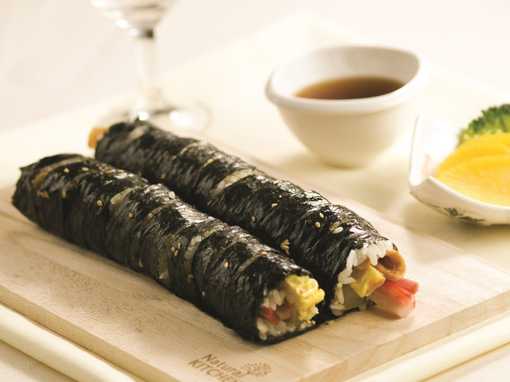
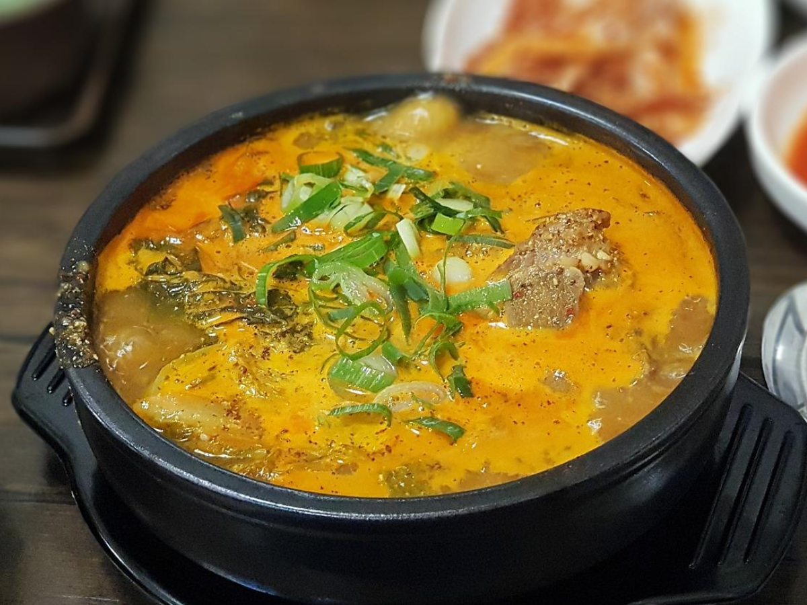
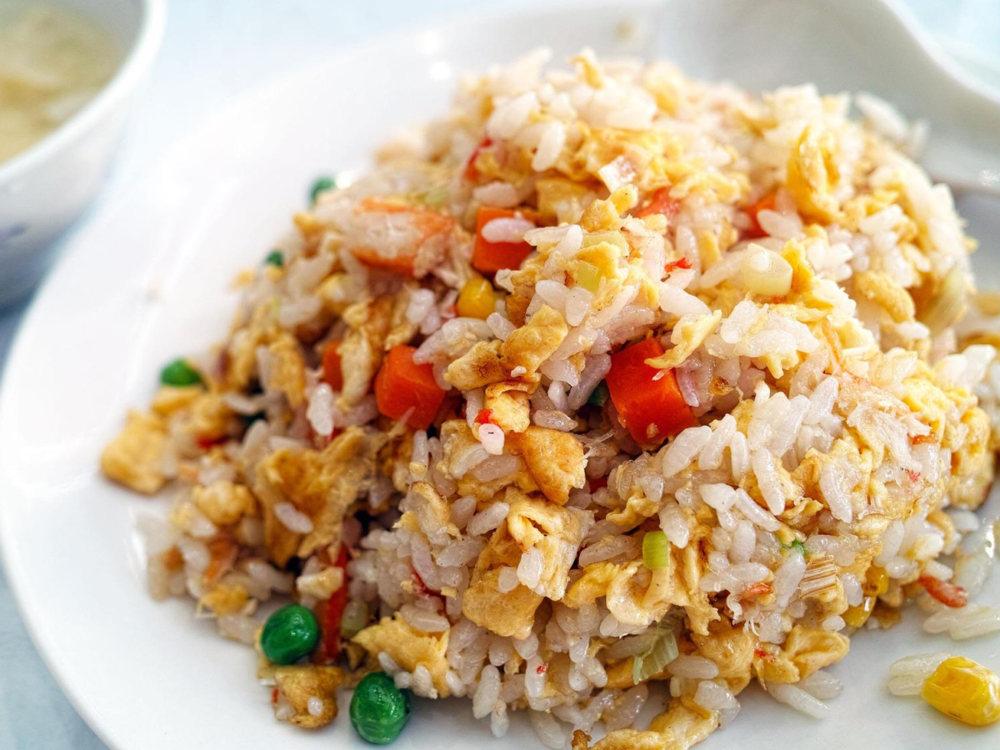
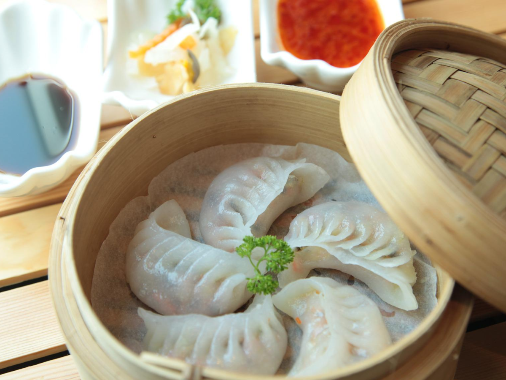
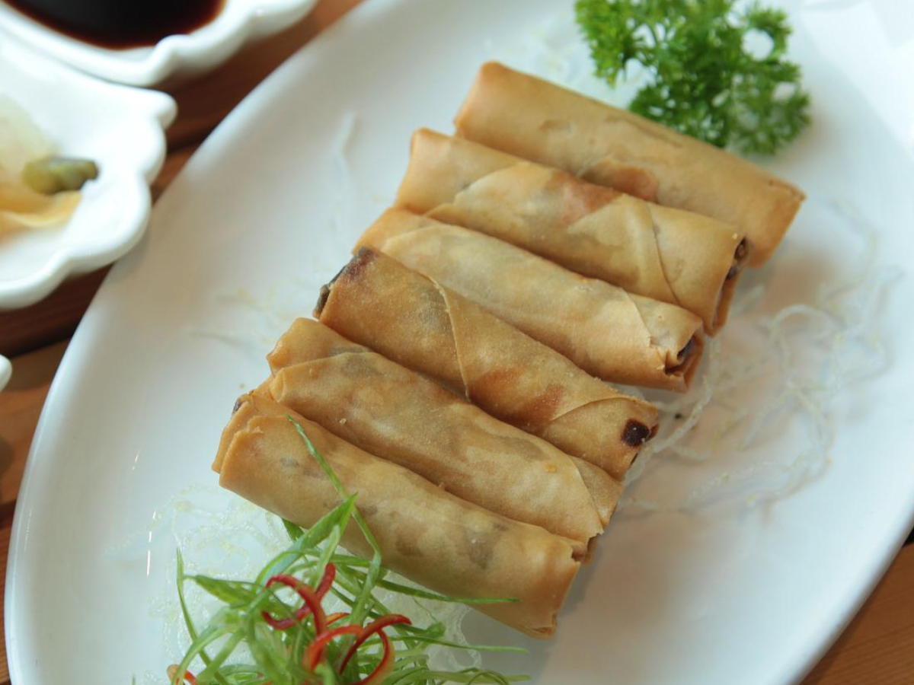
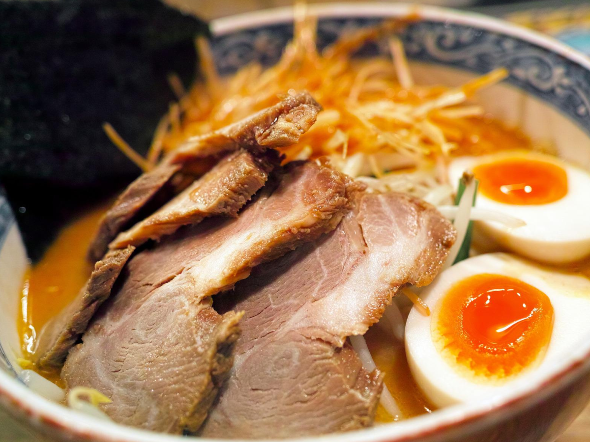
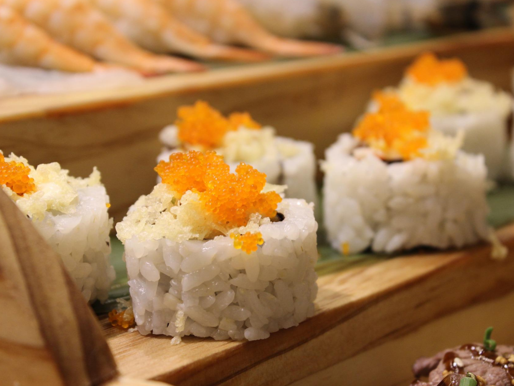
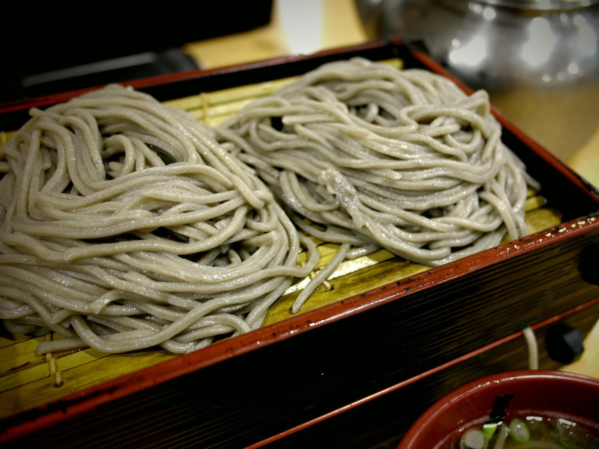

|

한국의 요리 |
|---|
|  |
김밥
김 위에 밥을 펴 놓고 여러 가지 반찬으로 소를 박아 둘둘 말아 싸서 썰어 먹는 음식.
김밥 만들기
1. 오이를 잘라 주고 소금을 뿌려 준다. 시금치로 해도 괜찮다.
2.당근은 채썰어 볶아 준비해 준다.
3.계란도 지단을 만들어 썰어둔다.
4. 갓 지은 밥에 소금 약간 넣어주고 참기름 한큰술 넣어주고 깨소금을 넣는다.
5. 한주먹의 밥양을 김에 골고루 펴주어 재료를 얻고 싸주면 맛있는 김밥 만들기 완성. |
|---|
|  |
돼지국밥
돼지고기와 뼈로 낸 국물에 밥을 말아 끓인 음식.
돼지국밥 만들기
1. 돼지고기 앞다리살 1kg 월계수잎과 같이 끓는 물에 넣고 5분간 삶아 준다.
2. 끓는 물에 5분간 삶아준 앞다리살을 건져내고 물은 전부 버려 줍니다.
3. 다시 냄비에 앞다리살을 담고 쌀뜨물과 함께 육수용 재료들을 담아 줍니다.
4. 1시간 이상 푹 삶아 줍니다. 고기를 삶는 동안에 물을 보충해서 고기가 바닥에 붙지 않도록 한다.
5. 고기를 건지고 잠시 식혀 준 뒤에 먹기 좋은 크기로 잘라 준다.
6. 육수에 간을 하고 따로 뚝배기에 담아 끓이면 맛있는 돼지국밥 만들기 완성. |
|---|
중국의 요리 |
|---|
|  |
볶음밥
쌀밥에 당근, 쇠고기, 감자 따위를 잘게 썰어 넣고 기름에 볶아 만든 음식.
볶음밥 만들기
1. 대파 약간은 송송 썰고 크래미 2개는 손으로 잘게 찢고, 밥을 준비한다.
2. 계란 1개는 젓가락으로 잘 풀어 스크램블, 굴소스는 2/3큰술 준비.
3. 달걀이 어느정도 익으면, 파를 넣고 중불에 볶는다.
4. 파의 향이 나기 시작하면, 불을 끄고 밥을 기름에 골고루 섞듯이 잘 섞어준다.
5. 다시 불을 켜고 밥알을 고슬고슬하게 볶고, 크래미도 넣는다.
6. 굴소스 2/3큰술을 넣어 골고루 섞는다. 간이 맞는다면 맛있는 볶음밥 만들기 완성. |
|---|
|  |
만두
밀가루 따위를 반죽하여 소를 넣어 빚은 음식.
만두 만들기
1. 얼려둔 만두는 미리 꺼내서 해동시킨다.
2. 예열된 팬에 만두를 넣고, 살짝 굽는다.
3. 전분과 물을 넣어 전분물을 만든다.
4. 전분물을 붓고 나서 물기가 없어질 때까지 뚜껑을 덮고 익힌다.
5. 전분물을 넣어 구운 맛있는 만두 요리 완성. |
|---|
|  |
춘권
돼지고기와 달걀로 버무린 소를 밀가루나 쌀가루로 만든 얇은 전병에 싸서 튀긴 음식.
춘권 만들기
1. 양파와 양배추, 호박, 마늘, 생강을 다듬는다.
2. 돼지고기 등심(300g)을 채썰어준뒤, 소금, 후추 한 꼬집씩과 정종 (2Tbsp) 를 넣고 밑간을한다.
3. 팬위에 기름을 두르고, 다진 마늘과 생강, 돼지고기을 볶아주고,이후 고추가루를 넣어 볶아준다.
4. 준비한 야채도 볶고, 식힌다. 식는 동안 스파이시 마요 소스와 밀가루 물을 준비.
5. 고기를 건지고 잠시 식혀 준 뒤에 먹기 좋은 크기로 잘라 준다.
6. 춘권피에 속을 채워 말고, 밀가루 물로 붙인다. 이후 튀기면 맛있는 춘권 완성. |
|---|
일본의 요리 |
|---|
|  |
라멘
밀가루로 만든 길고 얇은 면을 삶아 다양한 재료를 넣어 만든 중화풍의 일본 면 요리.
라멘 만들기
1. 대파를 썰고 청양 고추를 다듬는다.
2. 대파와 우삼겹, 된장을 볶는다.
3. 고추기름을 내고 다진 마늘을 준비한다..
4. 물과 면을 넣고 끓이면 맛있는 라멘 완성 |
|---|
|  |
캘리포니아 롤
생선, 야채, 과일 등 다양한 재료를 사용하는 초밥.
캘리포니아 롤 만들기
1. 아보카도는 씨를 제거한 뒤 0.3cm 두께로 썰고 크레송은 물기를 제거한다.
2. 게맛살은 결대로 찢은 뒤 마요네즈와 소금, 후춧가루를 넣어 버무린다.
3. 내열용기에 식초 1큰술과 설탕, 소금을 넣고 전자레인지에 20초 정도 완전히 녹인다.
4. 따뜻한 밥에 넣고 고루 섞는다.
5. 밥과 재료를 랩째 돌돌 말면 맛있는 캘리포니아 롤 완성. |
|---|
|  |
소바
메밀가루를 주재료로 하여 만든 면류의 일종.
소바 만들기
1. 쯔유와 냉수를 2:3의 비율로 섞어 잠시 냉동실에 넣어둔다.
2. 간 무를 고운 체에 넣고 생수를 뿌려 헹구면서 매운맛을 씻겨낸다.
3. 고추냉이, 쯔유, 물, 간 무를 적당량 섞는다.
4. 면을 삶고 전분기를 제거한다.
5. 면을 소스에 찍으면 맛있는 소바 완성. |
|---|
서울여자대학교
미래산업융합대학 소프트웨어융합학과
2020111380 김희영